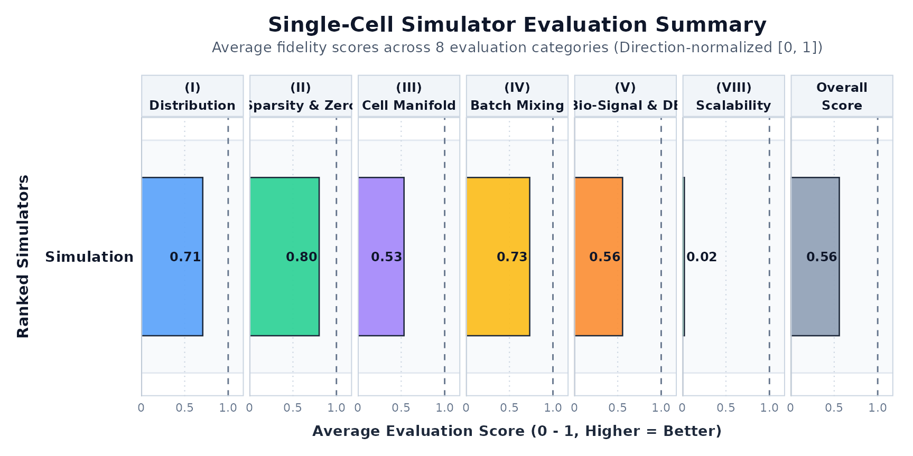
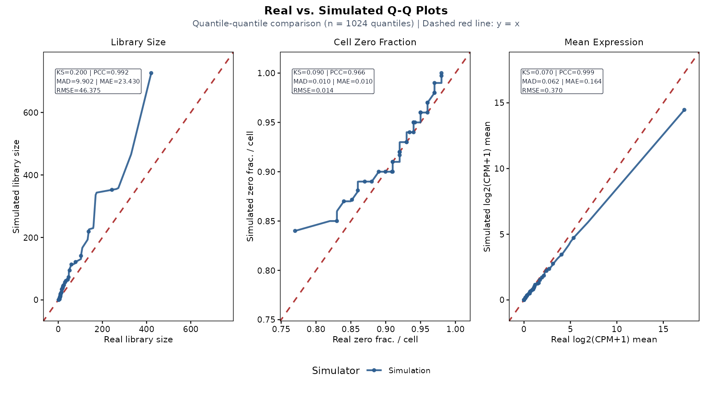

Getting Started with scSimEval: Benchmarking Single-Cell Simulations in Bioconductor
Source:vignettes/scSimEval-workflow.Rmd
scSimEval-workflow.RmdOverview & Bioconductor Ecosystem Integration
scSimEval provides a unified,
standardized benchmarking suite to evaluate how closely synthetic
single-cell datasets reproduce empirical biological references across
scRNA-seq, scATAC-seq, and
paired/unpaired single-cell multiomics.
Integration with Existing Bioconductor Infrastructure
scSimEval is built directly on Bioconductor core data
structures and statistical infrastructure:
-
Data representation: Accepts
SingleCellExperiment(and multi-modalSingleCellExperimentobjects withaltExp()), reading cell-type (cell_type) and replicate/batch (batch) annotations directly fromSummarizedExperiment::colData(). Users starting from Seurat objects can convert in one line viaSeurat::as.SingleCellExperiment(). -
Parallel & sparse execution: Uses
BiocParallelandMatrixsparse S4 methods for scalable memory-efficient evaluation. -
Downstream statistical engines: Integrates with
edgeR(pseudobulk quasi-likelihood differential expression/accessibility),CDI(Clustering Deviation Index),scaterandscuttle(QC and normalization utilities), andCellMixS(cell-specific batch mixing).
Comparison with Related Bioconductor Packages
-
splatter: Primarily focuses on simulating scRNA-seq count matrices (e.g., Splat, Lun, Simple models) and provides basic property comparisons viacompareSCEs().scSimEvalcomplementssplatterby serving as a simulator-agnostic evaluator that benchmarks any simulator output across 56 metrics in 8 categories—spanning distributional distances, dropout/sparsity curves, clustering concordance, batch mixing, pseudobulk differential fidelity, trajectory topology, cross-modal integration, and hardware-normalized scalability. -
countsimQC: Generates visual comparisons of distributional summaries between synthetic and real count matrices (primarily bulk or unimodal RNA-seq).scSimEvalextends beyond marginal count QC to assess single-cell downstream structure (clustering ARI/NMI/CDI, batch PCR/CMS/ISI, pseudobulk DEG/DA ROC-AUC, scATAC-seq TF-IDF accessibility, paired/unpaired RNA+ATAC integration, andcore_seconds/memory_per_core_mibefficiency).
Input Data Format
All top-level scSimEval evaluation entry points center
on SingleCellExperiment objects containing
raw counts (assays(sce)$counts) and cell metadata columns
(cell_type and batch in
colData(sce)):
# Optional conversion if starting from Seurat:
# ref_sce <- Seurat::as.SingleCellExperiment(ref_seurat)
# sim_sce <- Seurat::as.SingleCellExperiment(sim_seurat)For multiomics studies, pass either a named list
list(RNA = rna_sce, ATAC = atac_sce) or a single
SingleCellExperiment containing the secondary assay in
altExp(sce, "ATAC").
Quick-Start Tutorial (Unimodal scRNA-seq)
First, load scSimEval and the bundled
example_scrna dataset (ref and
sim are SingleCellExperiment objects with
cell_type and batch already stored in
colData):
library(scSimEval)
library(SingleCellExperiment)
data("example_scrna", package = "scSimEval")
example_scrna$ref
#> class: SingleCellExperiment
#> dim: 100 100
#> metadata(0):
#> assays(1): counts
#> rownames(100): Os04g0188433 Os05g0202800 ... Os06g0553200 Os04g0578600
#> rowData names(0):
#> colnames(100): AAACCGGCAAGTGTTT-1 AAACGGATCGATCAGT-1 ...
#> TTTGGTGCATGTCAGC-1 TTTGTGTTCATAACGC-1
#> colData names(2): cell_type batch
#> reducedDimNames(1): PCA
#> mainExpName: NULL
#> altExpNames(0):
head(colData(example_scrna$ref), 3)
#> DataFrame with 3 rows and 2 columns
#> cell_type batch
#> <factor> <factor>
#> AAACCGGCAAGTGTTT-1 Parenchyma_cell Bud_21
#> AAACGGATCGATCAGT-1 Parenchyma_cell Bud_21
#> AACAGCAAGGTTAGAG-1 Epidermis Bud_21Run evaluate_simulation_accuracy() on
ref_sce and sim_sce. Here we include timing
and memory metadata to compute Category VIII scalability metrics
(compute_bivariate = FALSE and
include_trajectory = FALSE keep this quick-start vignette
fast):
scrna_res <- evaluate_simulation_accuracy(
ref_sce = example_scrna$ref,
sim_sce = example_scrna$sim,
cell_type_col = "cell_type",
batch_col = "batch",
modality = "scRNA-seq",
compute_bivariate = FALSE,
include_trajectory = FALSE,
elapsed_time = 12.4,
memory_mb = 420,
sim_cores = 2L,
threads = 1L,
verbose = FALSE
)
head(scrna_res$metrics_summary_table, 10)
#> Category Property Metric
#> 1 Distributional Properties library_size Wasserstein
#> 2 Distributional Properties library_size KS
#> 3 Distributional Properties library_size MAD
#> 4 Distributional Properties library_size Bhattacharyya
#> 5 Distributional Properties library_size Runs_Statistic
#> 6 Distributional Properties library_size NN_Mismatch
#> 7 Distributional Properties library_size Between_Dataset_Silh_Global
#> 8 Distributional Properties library_size MAE
#> 9 Distributional Properties library_size RMSE
#> 10 Distributional Properties library_size KDE_ISE
#> Value Sim_Cores
#> 1 22.87000000 2
#> 2 0.20000000 2
#> 3 10.00000000 2
#> 4 0.00564741 2
#> 5 -2.83556062 2
#> 6 0.06500000 2
#> 7 0.02451093 2
#> 8 22.87000000 2
#> 9 45.22554588 2
#> 10 0.00123334 2Visualizing Results
We can summarize overall category scores or inspect distributional Q-Q / density concordance directly from the returned evaluation object:
plot_evaluation_summary(scrna_res)
plot_distribution_qc(
ref_data = example_scrna$ref,
sim_data = example_scrna$sim,
layout = "qq",
properties = c("library_size", "zero_fraction_cell", "mean_expression")
)
Quick-Start Tutorial (Paired Multiomics: scRNA-seq + scATAC-seq)
For simultaneous co-assay simulations,
evaluate_multiomics_accuracy() jointly evaluates both
unimodal layers plus Category VI cross-modal alignment:
data("example_multiomics", package = "scSimEval")
multi_res <- evaluate_multiomics_accuracy(
ref_multi = example_multiomics$ref_multi,
sim_multi = example_multiomics$sim_multi,
pairing = "paired",
elapsed_time = 28.5,
memory_mb = 1024,
sim_cores = 2L,
threads = 1L,
verbose = FALSE
)
table(multi_res$benchmark_summary_table$Category)
#>
#> (VI) Multiomics Integration & Alignment
#> 5
#> (VII) Trajectory & Lineage Topology
#> 5
#> (VIII) Computational Scalability & Efficiency
#> 2
#> Biological Signal & Differential Fidelity
#> 12
#> Cellular Manifold & Clustering Concordance
#> 16
#> Distributional Properties
#> 270
#> Sparsity & Zero-Inflation Dynamics
#> 7
#> Technical Variation & Batch Mixing Dynamics
#> 10We can also compute normalized scores ([0, 1], where
1 is best) via normalize_bubble_scores() and
summarize multiple simulators with
plot_benchmark_bubble_matrix().
Further Reading & Interactive GUI
-
Complete 56-Metric Reference: See
vignette("metrics-catalog", package = "scSimEval")for definitions, formulas, and optimization directions for every measure across Categories I–VIII. -
Domain Case Studies: See the scRNA-seq, scATAC-seq,
paired multiomics, unpaired multiomics, and
.rdsaggregation vignettes. -
Interactive Shiny Interface: Point-and-click
dataset exploration, dynamic filtering, and high-resolution report
exports are available in the companion package
scSimEvalStudio(scSimEvalStudio::launch_scSimEval_app()).
Session Information
sessionInfo()
#> R version 4.6.2 (2026-10-29)
#> Platform: x86_64-pc-linux-gnu
#> Running under: Ubuntu 24.04.5 LTS
#>
#> Matrix products: default
#> BLAS: /usr/lib/x86_64-linux-gnu/blas/libblas.so.3.12.0
#> LAPACK: /usr/lib/x86_64-linux-gnu/lapack/liblapack.so.3.12.0 LAPACK version 3.12.0
#>
#> locale:
#> [1] LC_CTYPE=en_US.UTF-8 LC_NUMERIC=C
#> [3] LC_TIME=en_US.UTF-8 LC_COLLATE=en_US.UTF-8
#> [5] LC_MONETARY=en_US.UTF-8 LC_MESSAGES=en_US.UTF-8
#> [7] LC_PAPER=en_US.UTF-8 LC_NAME=C
#> [9] LC_ADDRESS=C LC_TELEPHONE=C
#> [11] LC_MEASUREMENT=en_US.UTF-8 LC_IDENTIFICATION=C
#>
#> time zone: Asia/Kolkata
#> tzcode source: system (glibc)
#>
#> attached base packages:
#> [1] stats4 stats graphics grDevices utils datasets methods
#> [8] base
#>
#> other attached packages:
#> [1] SingleCellExperiment_1.34.0 SummarizedExperiment_1.42.0
#> [3] Biobase_2.72.0 GenomicRanges_1.64.0
#> [5] Seqinfo_1.2.0 IRanges_2.46.0
#> [7] S4Vectors_0.50.3 BiocGenerics_0.58.1
#> [9] generics_0.1.4 MatrixGenerics_1.24.0
#> [11] matrixStats_1.5.0 scSimEval_0.99.10
#>
#> loaded via a namespace (and not attached):
#> [1] RColorBrewer_1.1-3 jsonlite_2.0.0 magrittr_2.0.5
#> [4] ggbeeswarm_0.7.3 SuppDists_1.1-9.9 farver_2.1.2
#> [7] rmarkdown_2.32 fs_2.1.0 ragg_1.5.2
#> [10] vctrs_0.7.3 htmltools_0.5.9 S4Arrays_1.12.1
#> [13] BiocNeighbors_2.6.0 SparseArray_1.12.3 sass_0.4.10
#> [16] sctransform_0.4.3 parallelly_1.50.0 KernSmooth_2.23-27
#> [19] bslib_0.12.0 htmlwidgets_1.6.4 desc_1.4.3
#> [22] ica_1.0-3 plyr_1.8.9 cachem_1.1.0
#> [25] igraph_2.3.4 lifecycle_1.0.5 pkgconfig_2.0.3
#> [28] rsvd_2.0.0 Matrix_1.7-6 R6_2.6.1
#> [31] fastmap_1.2.0 future_1.82.0 digest_0.6.39
#> [34] patchwork_1.3.2 Seurat_6.0.0 scater_1.40.2
#> [37] RSpectra_0.16-2 irlba_2.4.1 textshaping_1.0.5
#> [40] beachmat_2.28.0 labeling_0.4.3 progressr_1.1.0
#> [43] httr_1.4.9 abind_1.4-8 compiler_4.6.2
#> [46] proxy_0.4-29 withr_3.0.3 S7_0.2.2
#> [49] BiocParallel_1.46.0 viridis_0.6.5 fastDummies_1.7.6
#> [52] MASS_7.3-66 DelayedArray_0.38.2 ggsci_5.2.0
#> [55] tools_4.6.2 ranger_0.18.0 vipor_0.4.7
#> [58] otel_0.3.0 beeswarm_0.4.0 future.apply_1.21.0
#> [61] glue_1.8.1 grid_4.6.2 Rtsne_0.17
#> [64] cluster_2.1.8.3 reshape2_1.4.5 gtable_0.3.6
#> [67] class_7.3-24 data.table_1.18.6.1 BiocSingular_1.28.1
#> [70] ScaledMatrix_1.20.0 sp_2.2-4 XVector_0.52.0
#> [73] RcppAnnoy_0.0.23 ggrepel_0.9.8 RANN_2.6.3
#> [76] pillar_1.11.1 stringr_1.6.0 spam_2.11-4
#> [79] RcppHNSW_0.7.0 limma_3.68.5 splines_4.6.2
#> [82] dplyr_1.2.1 lattice_0.23-1 tidyselect_1.2.1
#> [85] locfit_1.5-9.12 CDI_1.10.0 scuttle_1.22.0
#> [88] pbapply_1.7-5 knitr_1.52 gridExtra_2.3.1
#> [91] edgeR_4.10.7 scattermore_1.2 RhpcBLASctl_0.23-42
#> [94] xfun_0.62 pls_2.9-0 statmod_1.5.2
#> [97] stringi_1.8.9 yaml_2.3.12 evaluate_1.0.5
#> [100] codetools_0.2-20 kSamples_1.2-12 tibble_3.3.1
#> [103] cli_3.6.6 uwot_0.2.5 RcppParallel_6.2.1
#> [106] systemfonts_1.3.3 jquerylib_0.1.4 Rcpp_1.1.2
#> [109] globals_0.20.0 png_0.1-9 parallel_4.6.2
#> [112] pkgdown_2.2.1 ggplot2_4.0.4 dotCall64_1.2
#> [115] mclust_6.1.3 listenv_1.1.0 viridisLite_0.4.3
#> [118] scales_1.4.0 ggridges_0.5.7 e1071_1.7-17
#> [121] SeuratObject_5.4.0 rlang_1.3.0 cowplot_1.2.0